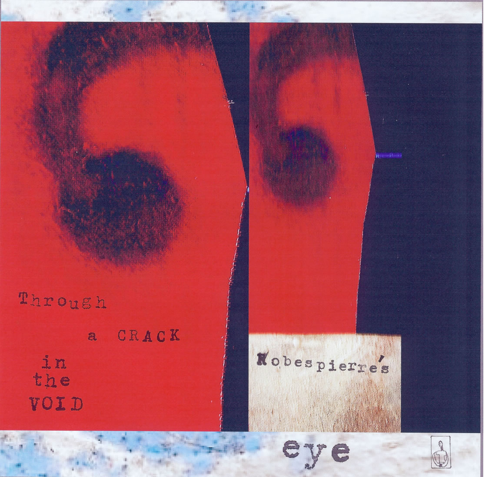

Gary LeBel Cumming, Georgia USA
)pEEp(
SUN's pale after burn(
R O W S of houseshouseshouses(
IN ONE
2 pink [ glistening] BODIES d e s c e n d
5maybe6 steps into another room's light
]THEN [
pas de deux back into CHAOS
beyond
the glass front door
EYE passd
)glancing
IN>>